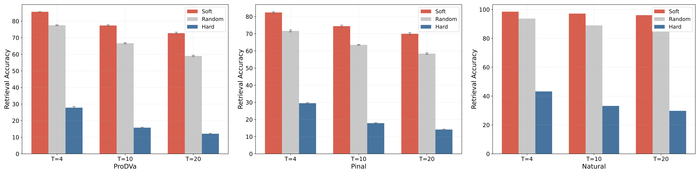

Rethinking the Evaluation Metrics
In this section, we provide a comprehensive analysis regarding the correlations among different evaluation metrics on PDFBENCH.
1. Does PPL Accurately Reflect pLDDT and PAE?
We begin by exploring to what extent sequence-level metrics reflect protein structures. Folding proteins into 3D structures using AlphaFold or ESMFold is time-consuming and requires substantial computational resources, particularly for longer sequences. Previous studies (ProtGPT2, ProGen2 and RITA) have observed a correlation between PPL and pLDDT scores. However, no empirical results or further analyses have been conducted to investigate the correlation.

Results are randomly sampled from natural proteins with low PPL scores, Chroma-designed proteins with medium PPL scores, and randomly generated proteins with high PPL scores. Figure 3 presents the distributions of PPL, pLDDT, and PAE. Proteins with high pLDDT values are predominantly clustered in the low PPL range, whereas those with low pLDDT values are concentrated in the high PPL range. For the proteins situated between these two clusters, a negative correlation is observed between PPL and pLDDT values. Specifically, lower PPL values are generally associated with higher pLDDT scores. A similar pattern is observed in the distribution of PPL and PAE. Therefore, we empirically categorize PPL values into three ranges, denoted as low PPL range (values above 500), medium PPL range (values between 500 and 2,000), and high PPL range (values above 2,000). Additionally, the Pearson correlation in Figure 3(c) highlights the relationships between PPL, pLDDT, and PAE.
In the low PPL range, proteins are well-folded, exhibiting high pLDDT scores and low PAE values. In contrast, proteins in the high PPL range struggle to fold into plausible structures. Within the medium PPL range, proteins with higher PPL values tend to display lower pLDDT scores and higher PAE values.2. Do Repetitive Patterns Lead to Lower Structural Plausibility?
Previous research DPLM has found that repetitive patterns occurring in amino acid sequences may result in low pLDDT scores, thereby leading to lower structural plausibility. We conduct an empirical analysis using the Repeat metric to measure the correlation between this pattern and foldability. Proteins designed by ESM3 and Pinal exhibit repetitive patterns, as indicated by their high scores on the Repeat metric. Figure 4 presents the distribution of Repeat scores and pLDDT and PAE values for proteins randomly sampled from natural sequences and those designed by ESM3 and Pinal. One observation is that when the Repeat score remains relatively low, there is no clear relationship between Repeat and foldability. In other words, a low Repeat score does not necessarily indicate that a protein is well-folded. However, when the Repeat score exceeds 10, higher Repeat values are associated with lower pLDDT scores and higher PAE values. Therefore, it is important to maintain repetitive patterns below a certain threshold (e.g., Repeat < 10) when designing well-folded proteins.

3. How Faithfully Do Designed Proteins Align with Functional Descriptions?
The most reliable strategy for evaluating the alignment between designed proteins and input textual descriptions is through wet-lab experiments. However, such experiments are time-consuming and costly. Therefore, employing computational methods to screen proteins involves a trade-off between efficiency and accuracy. To more effectively evaluate the functions of designed proteins, both oracle model-based and retrieval-based metrics have been proposed.
We first investigate whether the two oracle model-based language alignment metrics exhibit consistency in evaluating natural proteins. These two metrics differ in two key perspectives. First, the ProTrek Score measures similarity between ground truth and designed proteins directly based on their embeddings, whereas the EvoLlama Score assesses similarity through predicted functional descriptions. Second, ProTrek is an oracle model pre-trained on large-scale datasets without further fine-tuning on specific downstream tasks. In contrast, EvoLlama is trained from scratch on the downstream task, leading to a distinct intrinsic knowledge distribution between the two oracle models. Figure 5(a) illustrates the consistency between the ProTrek Score and the EvoLlama Score for natural proteins sampled from the validation and test sets of our description-guided task. The results show that most proteins are accurately predicted and tightly clustered in the upper-right corner, indicating strong agreement between the two metrics. Furthermore, following Pinal and the definitions introduced in Section~the metrics section, we establish empirical score thresholds to identify well-aligned proteins. Specifically, proteins with a ProTrek Score above 15 and an EvoLlama Score above 50 are considered to faithfully match the input functional descriptions.

The above discussion has remained focused on the global level of protein function. However, attention must also be directed toward local sequence alignment within proteins, particularly minor mutations in functional sub-sequences (motifs). To assess whether ProTrek is sensitive to protein mutations, we randomly select 1,000 natural proteins from \desctest and introduce random mutations with specified probabilities. The results are illustrated in Figure~6.
The ProTrek Score assesses both global alignment between the overall proteins and the functions, as well as local alignment between motifs and functions.Next, we discuss the language alignment metrics that do not rely on oracle models. The GT-TM Score measures the similarity between a designed protein and the ground truth structure. Since protein structure determines function, it is generally assumed that structurally similar proteins exhibit similar functions. However, we argue whether proteins with similar functions can fold into dissimilar structures. In Figures 5(b) and (c), proteins designed by Pinal and ProDVa are sampled for illustration. The average score reported in Table 5 is used as the threshold to determine whether the GT-TM score is considered high. It can be observed that 96.73% of the Pinal-designed proteins with high similarity to the ground truth exhibit high ProTrek scores (above 15), while 75.89% achieve high EvoLlama scores (above 50). A similar conclusion can be drawn from the ProDVa-designed proteins, demonstrating that high structural similarity leads to similar functions. Furthermore, for proteins with lower structural similarity, no correlation between the two similarities is observed.
A high GT-TM Score generally indicates functional similarity among structurally similar proteins. However, high structural similarity is not a prerequisite for designing well-aligned proteins. Therefore, relying solely on this metric provides limited insight into whether the designed proteins align well with their functional descriptions.In addition to the aforementioned metrics, Retrieval Accuracy is a retrieval-based metric that measures whether the embeddings of the positive function-sequence pair are the most similar among all candidates. However, this metric is highly dependent on the retrieved sequences. To assess the extent to which the retrieval strategy influences the results, we further define Soft Retrieval Accuracy and Hard Retrieval Accuracy. The difference between them lies in whether the (T-1) most or least relevant texts and their corresponding sequences are retrieved in relation to the positive pair. The relevance between textual descriptions is defined by the cosine similarity of their embeddings. In Figure 6, for proteins designed by ProDVa and Pinal, the gap between Hard Retrieval Accuracy and Soft Retrieval Accuracy is 60.64% and 55.82%, respectively. Even for natural proteins, the gap between the two metrics on the ground truth can be as high as 66.31%. Therefore, the results demonstrate that the retrieval strategy significantly impacts performance.
BibTeX
@misc{kuang2025pdfbenchbenchmarknovoprotein,
title={PDFBench: A Benchmark for De novo Protein Design from Function},
author={Jiahao Kuang and Nuowei Liu and Changzhi Sun and Tao Ji and Yuanbin Wu},
year={2025},
eprint={2505.20346},
archivePrefix={arXiv},
primaryClass={cs.LG},
url={https://arxiv.org/abs/2505.20346},
}